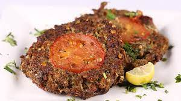

Chapli Kababs (Overnight Option) are a delicacy originating from Peshawar, Pakistan. They are made of ground beef, and are extremely flavorful. Their originated in the city Peshawar. They are always shallow fry never grilled, and are one of few recipes that are exclusively Pakistani.